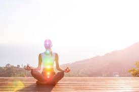

EnRaizar_Te
EnRaizar_Te es un juego de palabras que combina las palabras enraizar y te, que significa arraigar y té. Enraizar es el acto de establecer raíces, de conectar con la tierra y con uno mismo. El té es una bebida que se prepara con hojas, flores o frutos de diversas plantas. El té puede tener propiedades beneficiosas para la salud, el bienestar y la relajación. EnRaizar_Te puede ser un nombre para una marca, un proyecto o una filosofía de vida que busca promover el equilibrio entre el cuerpo, la mente y el espíritu.

"Terapias Naturales para el Equilibrio de la Memoria Celular"
En la búsqueda del bienestar holístico y la armonía interior, muchas personas recurren a prácticas terapéuticas que se centran en la conexión profunda entre el cuerpo, la mente y el espíritu. Una de estas prácticas es el Reiki, una técnica de sanación que trabaja en la energía vital universal para promover la curación y la relajación. Combinado con enfoques de terapias naturales, como el uso de piedras y gotas de Bach, se crea un poderoso sistema de sanación que aborda la memoria celular y la salud emocional de manera integral.